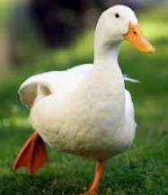
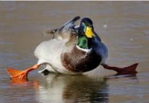

Тут їх і згадаємо трішки
Біла
 Рис.1 Качка в природіЖива
Це є позатаксономічна група птахів.
До качок належать галагази, черні, річкові качки, шавкуни, крехи й інші.
Не Біла, в кольорі
 Дикі качки цього виду не належать до тих які глибоко поринають:максимум, що вони роблять, так це опускають у воду голову, шию і частину тіла.
Занурюються цілком вони тільки в хвилини небезпеки.
Трохи фактів
- Станом на сьогодні відомо більше 110 різновидів качок.
- Качине крякання не видає ехо
- Качка володіє не одним, а трьома повіками.
- Найвища зафіксована швидкість качиного польоту склала 170 км/ч.
- Відомий випадок, коли качку виявили на висоті майже 9 км. Тоді вона зіткнулася з літаком.